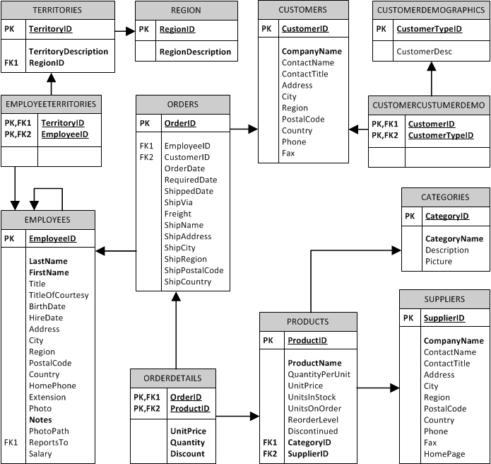

You have to enable javascript in your browser to use this web site.
Sinhroniziraj
Podatkovna baza:
Poženi poizvedbo
You have an error in your SQL syntax; check the manual that corresponds to your MySQL server version for the right syntax to use near '' at line 3
Relacije v bazi northwind:
